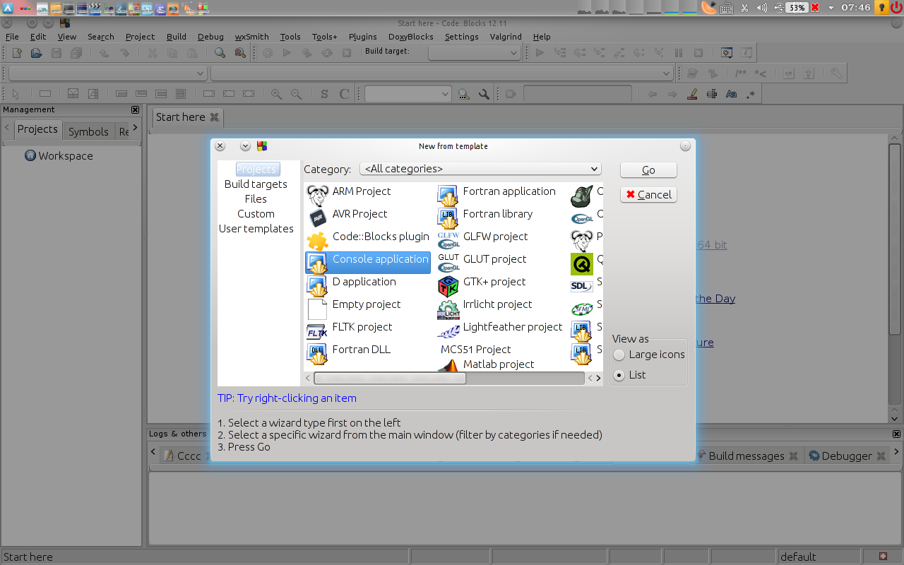

Getting started with gtest¶
Introduction and Installation¶
The google test C++ testing framework (gtest for short) is a framework for unit testing in C++. In previous years it has been used for unit testing in ELEN3009 (Software Development 2). This is a guide on how to set it up in codeblocks for APPM3021. I tested this on the latest codeblock (12.11). The guide assumes you have a certain file structure:
noiziv
├── doc
├── lib
├── log
├── src
└── tests
Hopefully the names of the files make sense and I am not going to explain them. Gtest can be downloaded from their `google code page`_. It is a zip archive (gtest-1.6.zip). You unzip it, rename the resulting folder gtest-1.6 as gtest and drop it in lib in the above file structure.
..note:: If you are using noiziv, the above downloading and extraction is done. Gtest can be found in the lib directory.
Configuration¶
The configurations can be done in two ways. Globally and per project. I will be showing the per project method here.
Step 1 - Get the code¶
You will have to follow the git instructions on Getting started with git
Step 2 - Create an empty project¶
If you have an existing project, I recommend you create a new project anyway. This is to show you how the whole setup is done then you can apply it to your existing project. It also makes it easier for you to follow this guide. The project is a console application,
You should create a new directory inside the noiziv code which you clone from github. This is because different people use different methods of compiling their code. This is the first step in making your codeblock specific files don’t bother other people. The screenshot below shows a possible name for the project directory.
This would be your resultant file structure:
noiziv
├── doc
├── lib
├── log
├── src
└── tests
Step 3 - Remove the default main¶
Codeblocks will create a default main with a simple helloworld program. Simply remove this from the project by right click on the main.cpp file and selecting remove. A nice screenshot:

Step 4 - Add source code¶
Now you add the source code. You do this by right clicking on the project name and selecting Add files recursively... a screenshot speaks volumes.
If you still have a codeblocks directory in your project structure, see step 3.
Step 5 - Add test code¶
Now if everyone plays nice and uses gtest and this file strucure, all test code will be in the directory tests. You add it similar to how you added the source code in the previous step.
Step 6 - Add google test¶
Now the real reason we are here: Adding googletest. This is done in a similar way to the src and tests but you don’t “Add files recursively...” anymore. Rather, you “Add files...”. You then select lib/gtest/src/gtest-all.cc. Screenshot for your viewing pleasure:
Step 7 - Change project build options¶
Now we configure the codeblocks compiler and linker to find the header files for googletest and for src when running tests. First right click on the project name and select Build options.... The screenshot can be found below:
Step 8 - Add search directories¶
In the project build options dialog, select the search directories tab:
Click the add button and you get another dialog to select directories:
Click the button with ellipsis (three dots). Select the directories to be searched. See the screenshot below for what these are:
Note
eigen in the below screenshot is an example library which you have `#include`d.
Step 9 - Linker¶
Now you need to tell the linker about a library which googletest needs called pthread. Simply select Linker Settings. Click on the add button and type pthread. If you don’t mention the picture in the main body of the report it should not be there. I am thus mentioning the image below.
Step 10 - Wrap up¶
That is it. The image below shows how your project view might look:
Then after you press F9 you would get something similar to:

Gtest primer¶
I don’t think I can do a better job than the people who made gtest so... Google test primer